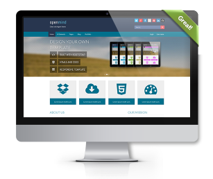
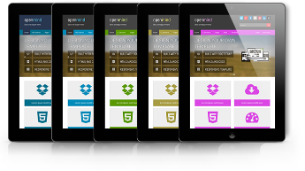
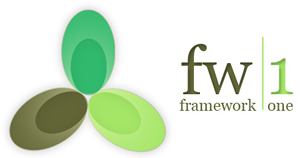
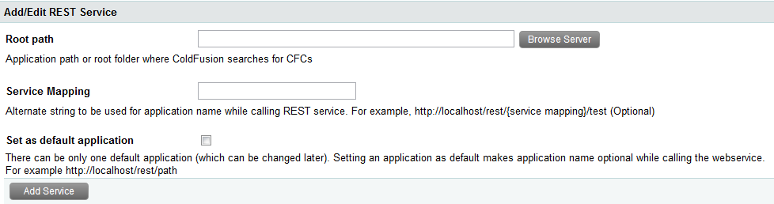
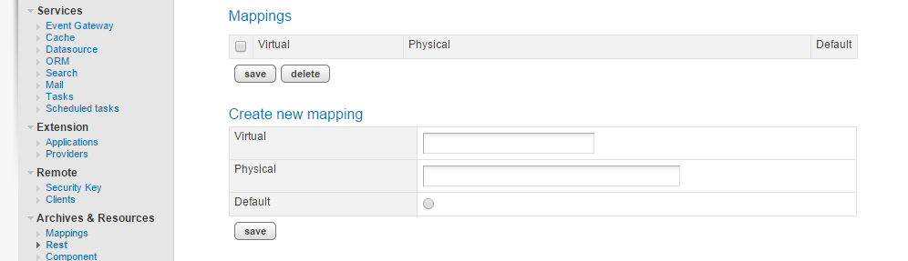

How We Rest
Who Am I?
@Francainath
This is what I do:
- (+
 )
) -
 (REST)
(REST)
In the Beginning...


Changing landscape

Where we are today:

PROBLEM:
How can we make our app work on all these devices?
solution #1: RESPONSIVE DESIGN
solution #2: CUSTOM APPS
Unique app for each environment
Unique app for each environment
This requires:
Why REST?
When compared to SOAP
(Simple Object Access Protocol),
REST is considered:
- lighter weight
- easier to use (for the most part)
- more flexible
REST basics
- App architecture style
- HTTP request-response model
- hence web focused
- REpresentational State Transfer
- Supports HTTP methods:
- GET, POST, PUT, DELETE, OPTIONS
- Returns data in different formats
- JSON, text, XML, etc.
How We Rest
5 key options
- 2 servers
- 3 frameworks
- 
- Natively available in CF10+
- Uses separate servlet to run REST
- Register your RESTful services
- register/manage RESTful aspects in CFC via metadata
Setup/Configuration
RestInitApplication(rootPath[,serviceMapping[,options]])
(in application.cfc)
routing
{domain}/rest/{serviceMapping}/{subResource}
Example:
{domain}/rest/fantasyFootball/getQuarterbacks
CFC code
SHOW ME!!!
Considerations
- "/rest" mapping
- can change this by revising the context path for the REST servlet in web.xml
- Metadata in CFCs
- Advocates: truly REST
- Critics: verbose, confusing
- Natively available in Railo 4+
- Uses separate servlet to run REST
- Register your RESTful services
- register/manage RESTful aspects in CFC via metadata
Setup/Configuration
routing
{domain}/rest/{service}/{action}
need a custom, example here
CFC code
SHOW ME!!!
Considerations
- "/rest" mapping
- {domain}/rest/{service}/{action}
- Metadata in CFCs
- Advocates: truly REST
- Critics: verbose, confusing
- REST focused framework
- Design: make REST simple for CF
- works as far back as CF8
- mostly conventions, some configurations necessary
Setup/Configuration
- Download from
- Taffy.io
- Github (github.com/atuttle/Taffy)
- Unzip into web root (preferred) or API subfolder
- Application CFC attribute: extends="taffy.core.api"
routing
component extends="taffy.core.resource" taffy:uri="/players" { //cfc code }
taffy:uri/taffy_uri attribute determines route connection
url: {domain}/api/{players}
CFC code
SHOW ME!!!
Considerations
- Simple implementation
- Diverse: CF8+ (& corr. Railo)
- Well documented
- Tooling (Dashboard)
- configuration: known issues w/Tomcat
- Enterprise application framework
- conventions based
- diverse and extensible
- REST as a module of your application
Setup/Configuration
- Preferred workflow:
- made directory for your app
- install ColdBox & preferred app skeleton
- install RELAX module
- Takes roughly a minute
- Best Practice: setup all your REST CFCs in an API module
routing
SHOW ME!!!
CFC code
SHOW ME!!!
Unique Considerations
- Simple implementation
- Very extensible within Box family
- RELAX as tester & documentation
- well documented
- Routes fully customizeable
- Very little unique code in CFC
- Lightweight framework
- conventions based
- very simple, accessible
- REST as an application option
Setup/Configuration
- Download from
- fw1.riaforge.org
- github.com/framework-one/fw1
- coldbox.org/forgebox/view/fw1
- setup app in application.cfc
- set routes/return data
routing
SHOW ME!!!
CFC code example
SHOW ME!!!
Unique Considerations
- Simple framework
- simple route setup
- Very little unique code in CFC
Recommendations
- Every option works
- non-frameworks vs frameworks
- application architecture style & extensibility
- what you wanna do "under the hood"
- There is no universal "right option"
- REST is not afancy or a gimic
- Take security seriously
- Make your API robust
- get Creative!!!